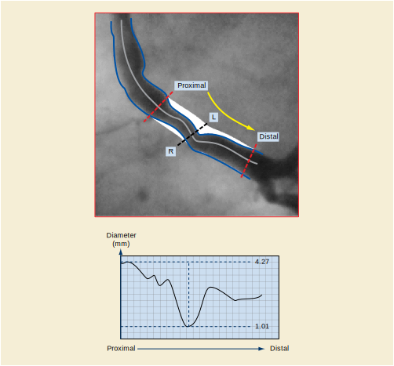

T Quantitative Analysis References (Informative)
Prev
Next
T Quantitative Analysis References (Informative)
T.1 Definition of Left and Right in the Case of Quantitative Arterial Analysis

Figure T.1-1. Definition of Left and Right in the Case of Quantitative Arterial Analysis